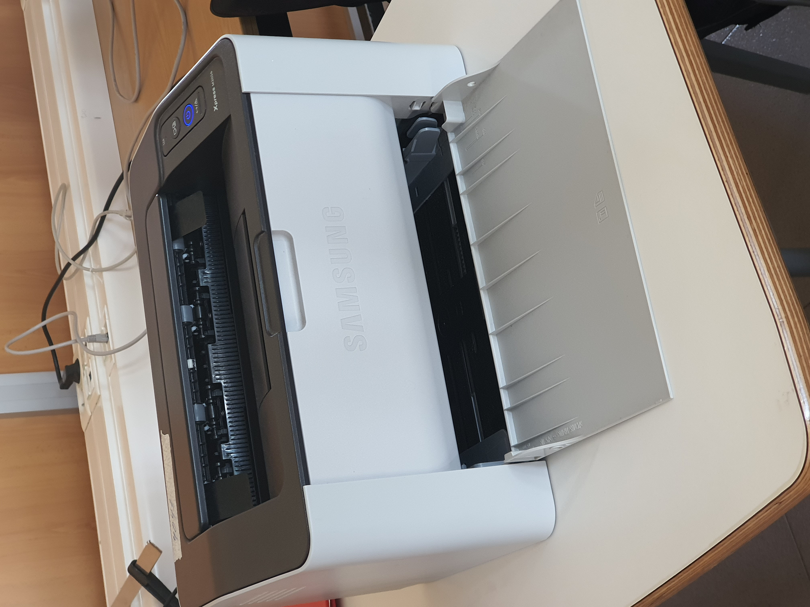

Instalación y montaje
Dia 1
Formar los grupos de trabajo con el profesor Joan Alba Coll, grupo formado
por Andrey
(Portavoz), Patrick (Coordinador) y Cheng Xi (Secretario)
y nos explicó el trabajo que íbamos a realizar durante la semana.
El profesor nos dio los materiales para que fuesemos organizando.


Dia 2
Fuimos a coger los materiales con el profesor Sebastián Arrom para empezar el proyecto
y los materiales que nos dieron fueron: 2 canaletas, 5 par de roseta, 3 embellecedores,
cables largos y conectores RJ45. Hemos hecho fotos de cada material y documentarlos y empezamos a montarlo.
Primero cogemos los 2 canaletas y lo ponemos uno al lado del otro y cada 50 cm de separación
una vez hecho esto ponemos los 2 par de rosetas y luego pasamos los cables por cada hueco y conectar al conector rj 45


Dia 3
Hoy en el proyecto hemos empezado a colocar los embellecedores y las marcas de lápiz en las
rosetas correspondientes (6 -total) y hemos de pasar el documento a html.


Dia 4
Hoy empezado a colocar los conectores al patch panel al conector de las rosetas, una vez hecho eso,
con un tester lo conectamos a la roseta con un cable y con el otro cable lo conectamos
al patch panel, pero tuvimos tres errores por fallos técnicos de cableado y actualmente seguimos teniendo uno con fallos.

Dia 5
Hoy hemos intentado arreglar el conector que nos fallaba y sigue fallando, hemos localizado el fallo
que se encuentra en el puerto pero sigue teniendo el mismo fallo.


Dia 6
Este día, hemos empezado a arreglar el error del conector RJ45 Hembra cat5e, y finalmente pudimos
arreglarlo, después de haberlo arreglado, hemos avanzado, y hemos hecho una comprobación
de rack a rack y también fue bien, y una vez terminado ahora.


Dia 7
Este dia Teniamos que hacer las comprobaciones de los pines, con las maquina virtuale
y desupes hemos cogido una impresora para que se conecte a la red que habiamos montado era una impresora
de marca Ricoh Aficio gx e2600 que resulta que no funcionaba del todo bien, hemos ido al panel del control
para poder conectarlo pero no funciono y tuvimos que instalar los drivers y se ve que no lo detecto la maquina
y lo tuvimos que cambiar a un de samsung y colgamos el trabajo de cisco



En este ultimo dia hicimos las comprovaciones de ping mas las impresoras y las carpetas compartidas,

L'objectiu d'aquesta activitat és muntar i configurar una xarxa local cablejada assegurant el seu funcionament.
Es verdad que no nos llegamos a leer todo el contenido hasta que llegamos a terminar la parte
Dia 8
En este ultimo dia hicimos las comprovaciones de ping mas las impresoras y las carpetas compartidas,
hicimos que un compañero se conecte a la carpeta compartida y que imprima el documeto